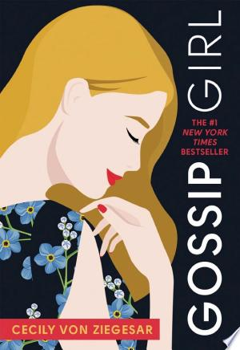

Gossip Girl
Escândalo, conexões, traição e guerra social entre adolescentes ricos do Upper East Side.
Você vai gostar se... Ela gosta de drama brilhante, bagunça de garoto rico e capítulos que avançam rápido.
YAfofocaromanceEnergia do drama de TVfácil